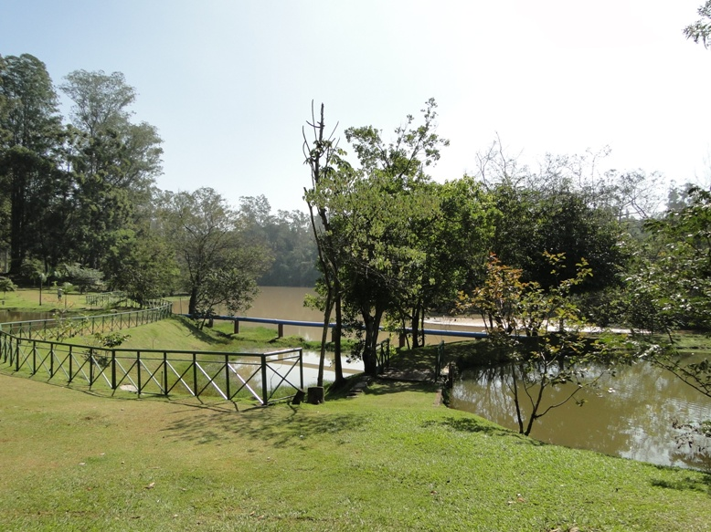
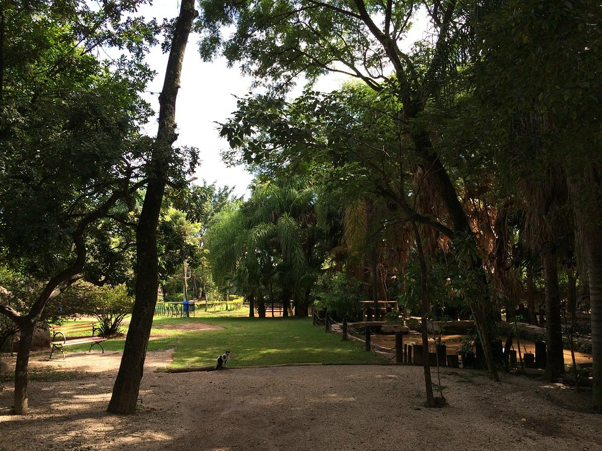
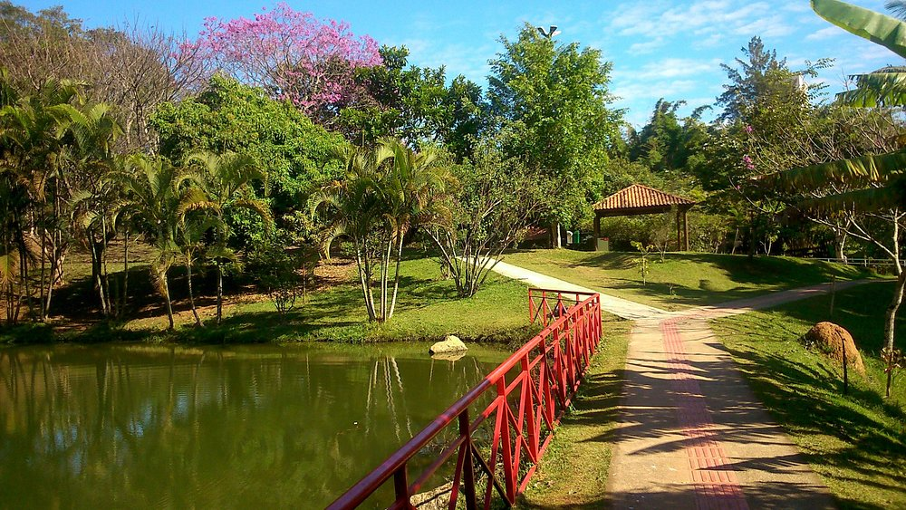

Parque Chico Mendes
O Parque Chico Mendes é um dos principais atrativos turísticos de Sorocaba. É um local ideal para famílias e amantes da natureza.

Parque da Biquinha
O Parque da Biquinha é um parque com jardins, fontes e áreas de lazer, é um local agradável para passeios em família e eventos culturais.

Zoológico de Sorocaba
Um dos principais cartões-postais de Sorocaba, considerado o segundo zoológico do Brasil em número de espécies e um dos mais completos da América Latina.

Parque da Água Vermelha
Oferece trilhas, áreas de lazer e uma rica biodiversidade. Ótimo lugar para quem gosta de atividades ao ar livre e contato com a natureza.
